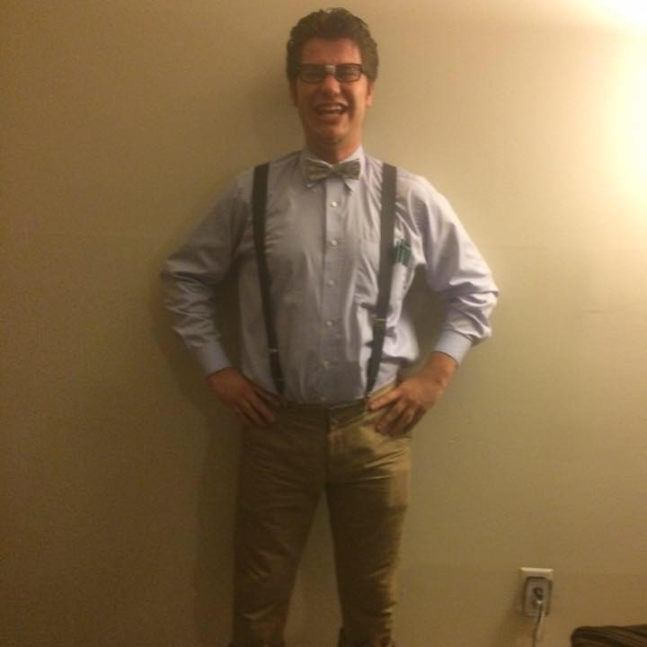

Brad Fischer
Graphic Designer
Baltimore-based Web Designer
My name is Brad Fischer and I am 21 years old. I am currently enrolled at Towson University where I am getting a degree in Graphic Design with a minor in Marketing. I first went to CCBC and graduated with an Associates Degree in Art. I haven’t always loved art, but ever since starting at CCBC, i have enjoyed creating it and seeing it. I enjoy playing video games and playing sports. My sports include soccer, lacrosse, and golf. The type of art I do is a lot of free art that is enjoyable for all ages. I am currently employed at Woodholme Country Club located in Pikesville Maryland.